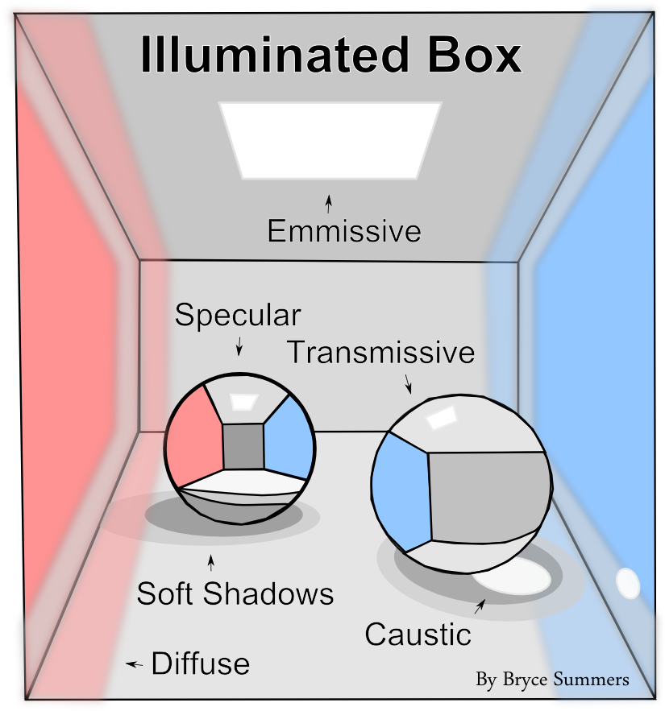
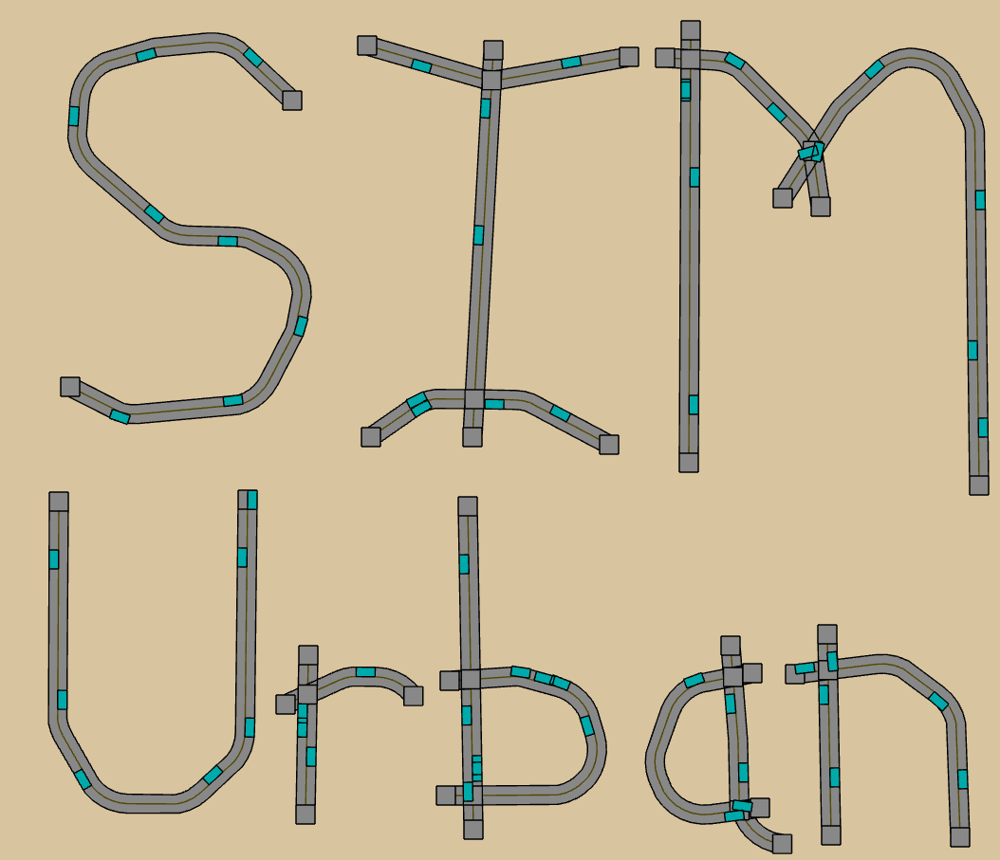

More specifically, we are at the Integrated Digital Media Program.
The Intellectual Community Building Lab seeks to expand the audience for various academic disciplines by creating compelling works of media and tools for expression.
We are currently actively working to serve two main communities: Computer Graphics (a subfield of Computer Science) and Transportation Engineering respectively:
| Computer Graphics | Transportation Engineering |
|---|---|
|  |  |
|
We seek to make the mathematical theory and pragmatic application of the field of Computer Graphics as accessible as possible, especially for motivated people who find reading the traditional literature to be frustrating. |
In collaboration with the NYU Transportation Engineering department, we are creating the Sim Urban computer game about transportation engineering principles. We plan to use the game to better inform the public about the descisions being made in their communities, while also using it to form a new national academic competion, where students can demonstrate their knowledge. |
The ICBL seeks to broaded the community of people who are excited about mathematical, scientific, technical, and theoretical ideas and empower them to apply the implications of the ideas in their lives and work. We want more people to put their names on their work.
The ICBL creates media products and media production processes used to tell stories about the technical details of ideas.
The emphasis is on visual media, which includes imagery, computer games, graphic novels, animations, animated television series, computational tools, interfaces, mazes, sand castles, coloring books, line drawings, motion graphics, etc. A few projects have also involved tactile media, such as the "Hump Yard" board game about data structures an algorithms that uses custom made toy manipulatives to provide a Computer Science experience that doesn't involve a computer. Some projects also involve auditory media, such as a musical that is currently in the works that seeks to expand popular conceptions of mathematics.
We tend to make these works in small teams. 'Small' allows for better creative direction and because I want sophisticated media productions to be made with smaller budgets so that educators can use media to help their students without being prohibited by cost and so that people can more easily express the amazing ideas floating in their heads, including those I may not understand. 'Team' ensures that I have people to bounce my ideas off of and every creative project improves when their are more motivated perspectives working on it.
We are currently headquartered at the Tandon School of Engineering in Brookly, NY, USA.

More specifically, we are at the Integrated Digital Media Program.
If you want to collaborate, please send an email to Bryce Summers at bs3363 [at] nyu [dot] edu. Please use the subject "ICBL_Collaboration_Request", since it will help me see the email. Also, please think about what you would like to contribute to the effort, since collaborations only work out when both parties are able to clearly articulate their motivations for the endeavor. Here are some example reasons that I would want to collaborate with you: